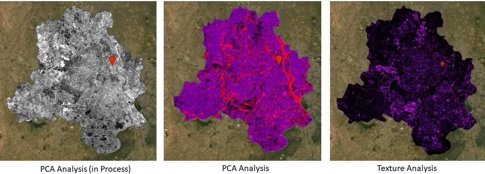

7 WeekFive: Google Earth Engine (GEE)
7.1 Summary
7.1.1 Google Earth Engine: Setup
We delved into the utilization of vector data in Earth Observation (EO) during the pre-reading week, where we familiarized ourselves with tools such as SNAP and QGIS. My understanding took a revolutionary leap with the introduction of the Google Earth Engine tool. Earth Engine, developed by Google, is capable of performing massive-scale computations and is often referred to as a planetary computer. In Earth Engine, images are inherited from raster data, with each image comprising one or more bands, each characterized by its own name, data type, scale, mask, and projection. On the other hand, features represent vector data, consisting of geometry with associated attributes. Moreover, a collection of several images or polygons is referred to as an image stack, while a collection of features is termed a feature stack, encompassing multiple polygons. The potential for enormous processing in Earth Engine is supported by JavaScript, which enables the execution of multiple parallel computations across CPUs, including those on Google servers, a process commonly known as cloud computing. Furthermore, Earth Engine employs Earth Engine Objects, denoted by names prefixed with ‘ee,’ with code executed on the server side rather than the client side (i.e., the browser). Lastly, Earth Engine offers the advantage of mapping over looping; while looping entails iterative processing that can be cumbersome, mapping in Earth Engine distributes processing across various machines, enhancing efficiency.
7.1.2 GEE functions and tools
The second part of the lecture covered the functions and tools utilized in Google Earth Engine (GEE). Objects such as vector, raster, feature, string, and number constitute the foundational elements of GEE. Each of these belongs to a class and is accessed through specific functions, methods, or constructs within GEE. Geometric operations, including spatial join, filtering, and zonal statistics, are integral components of typical GEE operations. Furthermore, GEE supports methods of machine learning, such as supervised and unsupervised classification, deep learning, and exploring relationships between variables, enabling the generation of applications and outputs in the form of online charts, scalable geospatial applications, and query data with user interfaces.
In GEE, object-oriented learning is facilitated through the use of reducer objects to compute statistics or perform aggregations. Reducers can aggregate data over time, space, bands, lists, and other data structures within Earth Engine. Each reducer can accept one or more inputs and generate one or more outputs. Image reduction can be performed by region, regions, or neighborhoods (utilizing kernels). GEE offers the advantage of accessing imagery from multiple sensors, allowing for the examination of changes over time in pixel values using functions such as linearFit() with the reducer function. This process, which can include multiple dependent variables, is termed multivariate multiple linear regression.
Similarly, join and filter operations can be applied within GEE. In the practice session, a super quick Principal Component Analysis (PCA) and texture analysis were conducted for Delhi, as illustrated in Figure 1, which significantly reduced the processing time compared to the previous week.
Figure-1: PCA and Texture analysis in GEE
7.2 Application
Recent research articles, such as those by (Tamiminia et al. 2020), underscore the evolving role of Google Earth Engine (GEE) in the field of remote sensing since its launch in 2010. Tamiminia, H. et al. provide a comprehensive overview of algorithms and capabilities available in GEE, including machine learning, image processing, image collection, geometry features, reducers, charts, and specialized algorithms, outlining the potential applications of GEE in remote sensing (see Figure 1). Conversely, (Amani et al. 2020) present a study wherein GEE was utilized in conjunction with version 1 of the Tropical Rainfall Measuring Mission (TRMM) precipitation products to analyze the spatial and temporal patterns of precipitation in the Zambezi River basin. They employed Kendall’s correlation and Sen’s slope reducers to investigate precipitation trends and magnitudes, based on TRMM data spanning from 1998 to 2017, revealing a “dry gets drier, wet gets wetter” pattern in the study region. Furthermore, they visually depicted the distribution of GEE usage, employing regression, machine learning, and other methods, as illustrated in figure 2 and figure-3 of their paper.
Figure-2: A summary of the algorithms and capabilities available in code editor-Google Earth Engine.

Figure-3: Categorization of articles that utilized GEE.

7.3 Reflection
As we enter week five, I find myself relieved of the tedious and prolonged application of remote sensing (RS) techniques, as experienced in week 3. The parallel execution of data storage, processing, and application/output delivery in Google Earth Engine (GEE) makes the process convenient, quick, and resourceful. GEE surpasses the earlier methods of iteration and time-consuming processes in earth observation. Its aggregation functions, which provide specific values to each pixel such as median, linear regression, and spatial join, facilitate effective and efficient image processing over massive planetary datasets, making me particularly fond of its capabilities. As someone deeply interested in data, I am fascinated to learn that GEE archives historical imagery and scientific datasets dating back 40 years, including satellite data from sources such as Landsat, Sentinel-2, and MODIS, as well as geophysical, weather, climate, and demographic data. This knowledge has fueled my enthusiasm and engagement in remote sensing and geospatial data science studies.
However, unlike most of the GIS analysis I have learned in ‘R’, utilizing GEE requires knowledge and skills in JavaScript and Python coding. Although we have been provided with codes, deploying them to suit various projects in the future may require debugging and troubleshooting, often leading to time-consuming searches for solutions on online communities such as Stack Exchange. This raises questions about the use of medium spatial resolution imagery available from the European Space Agency, which is provided free of charge, compared to high spatial resolution imagery from commercial satellites that are expensive to purchase. While the free availability of Google’s platform for GEE is a commendable initiative, concerns linger about its sustainability. So far, my experience with the monetarily charged aspects of GEE has been positive.
In conclusion, I couldn’t have asked for more than the relief from the multiple runs of imagery pre-processing, processing, classification, accuracy assessments, etc., in remote sensing, which are streamlined with the use of code in GEE. With a basic setup and overview understanding of GEE’s application in RS, I look forward to delving into classification in greater detail in upcoming sessions.